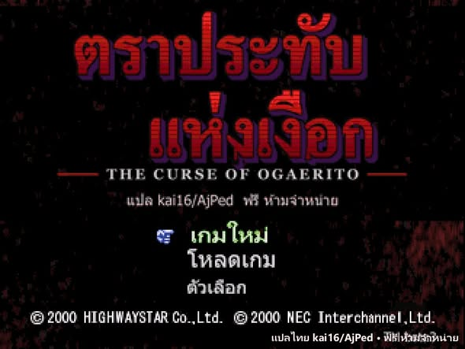
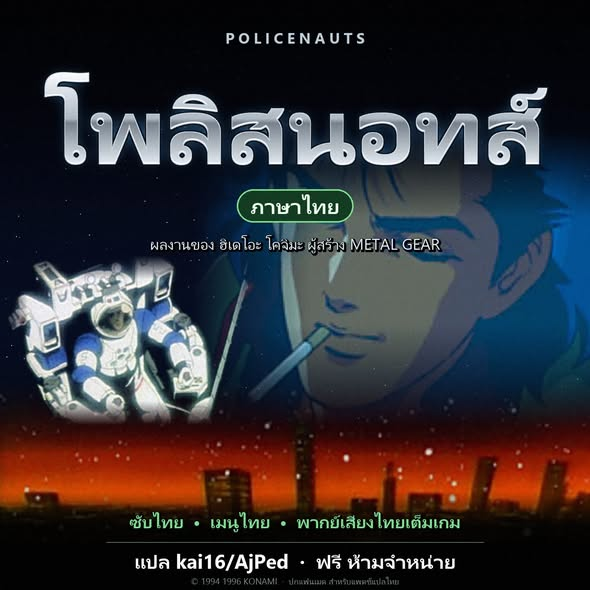

คู่มือ PDF
คู่มือ PDFPlayStation 5 / Xbox Series X|S
Grand Theft Auto VI
บทสรุปภาษาไทย 200 หน้า
ดูรายละเอียดKAI16 / GAME LIBRARY
แพตช์และคู่มือเกมภาษาไทย จากเพจแปล mod by kai16
5 เกม
คู่มือ PDFPlayStation 5 / Xbox Series X|S
บทสรุปภาษาไทย 200 หน้า
ดูรายละเอียด
แพตช์ภาษาไทยPlayStation
ตราประทับแห่งเงือก
ดูรายละเอียด
แพตช์ภาษาไทยPlayStation
สืบสวนไซไฟฉบับภาษาไทย
ดูรายละเอียดSuper Famicom / SNES
แพตช์ภาษาไทย · รวมพลังเหล่าซูเปอร์ฮีโร่
ดูรายละเอียดNintendo 64
บทสรุปภาษาไทย 128 หน้า
ดูรายละเอียดไม่พบเกมที่ตรงกับตัวกรอง
31 รายการ
รายการนี้รวบรวมพาธในเครื่องสำหรับใช้อ้างอิงบนเครื่องผู้ดูแลเว็บไซต์ พาธเหล่านี้ไม่ใช่ลิงก์ดาวน์โหลดสำหรับผู้เข้าชม
PlayStation
D:\mod\accon\AconcaguaThaiPatcher-MovieFix6.exeD:\mod\accon\thai-voice\Aconcagua-Thai-MovieFix8-Disc1.cueD:\mod\accon\thai-voice\Aconcagua-Thai-MovieFix8-Disc2.cueFamicom / NES
D:\mod\DB3\out\DB3patch.zipD:\mod\DB3\out\patch\DB3-kai16-thai.ipsFamicom / NES
D:\mod\dbz3\output\patcher\DBZ3-Thai-Patcher-kai16.exeD:\mod\dbz3\patcher\DBZ3-Thai-v1.3.bpsSuper Famicom / SNES
D:\mod\doraemon3\output\Doraemon3_TH_v1.2.ipsD:\mod\doraemon3\output\Doraemon3_TH_v1.2_Easy_Package.zipD:\mod\doraemon3\output\Doraemon3_Thai_Patcher.exePlayStation 2
D:\mod\dq\DQ8_Thai_Patcher_kai16_v3.0.exe.zipPlayStation
D:\mod\drslamp\dist\DrSlump_Thai_Patch.exeD:\mod\drslamp\output\Dr. Slump (Thai).cuePlayStation
D:\mod\eve\pe1_thai_patcher_v1.3.zipD:\mod\eve\pe1_disc2_thai_final_v1.1.zipPlayStation
D:\mod\HardEdge\release\HardEdgeThaiPatcher.exeFamicom / NES
D:\mod\kunio\output\Kunio-Thai-Patcher-v0.3.2-Windows.zipD:\mod\kunio\output\Kunio-Jidaigeki-Thai-v0.3.2.ipsFamicom / NES
D:\mod\kunio2\Downtown - Nekketsu Monogatari (Japan).nesFamicom / NES
D:\mod\kunioF\release\NekketsuKakutouThaiPatcher-Windows.zipD:\mod\kunioF\Nekketsu_Kakutou_Densetsu_Thai.ipsGame Boy Advance
D:\mod\mather3\Mother3ThaiPatcher_v3_12.zipPlayStation
D:\mod\MGS\mgs-integral-disc1-thai-v38-item-weapon-thai.cueD:\mod\MGS\mgs-integral-disc2-thai-full-text-codec-voice-cutscene-audio-fontfix-mission-log-pre-tank-thai-option-full-test-r11.cuePlayStation
D:\mod\panza\release\PanzerBandit_TH_Patcher.exeFamicom / NES
D:\mod\pizzacat\Cat Ninden Teyandee (Japan)-Thai-patched.nesPlayStation
D:\mod\Policenauts\dist\Policenauts_Thai_Patch_v1.0.exeD:\mod\Policenauts\out\Policenauts (Japan) (Disc 1) [TH].cueD:\mod\Policenauts\out\Policenauts (Japan) (Disc 2) [TH].cueDreamcast
D:\mod\REcode\RECV-Thai-Mod-Patcher-v0.13.exePlayStation
D:\mod\residentevil1\residentevil1_th_ps1.zipPlayStation
D:\mod\rockman dash\release_v36\Rockman_DASH_Thai_Patcher_v35_DualVoice.exeD:\mod\rockman dash\Rockman_DASH_Thai_Full_v36_ThaiVoice.cueDreamcast
D:\mod\shemue1\release\Shenmue_Thai_Patcher_v1.1.zipPlayStation
D:\mod\sold_of_samerau\patcher\dist\SoulOfTheSamurai_Thai_Patcher.exeD:\mod\sold_of_samerau\loma_pilot_v26.cuePlayStation
D:\mod\Soukaigi\dist\SoukaigiTH_Patch.zipPlayStation
D:\mod\the note\release\TheNote_Thai_Patch.exeD:\mod\the note\build_easy_voice\The Note (Thai).cuePlayStation
D:\mod\wild_arms\patcher_v1.2_dir\WildArms_Thai_Patcher_v1.2.zipNintendo 64
D:\mod\zelda64\ZeldaMMThaiPatcher.exeD:\mod\ten\output\pdf\Zelda_Majoras_Mask_N64_Thai_128p.pdfNintendo 64
D:\mod\zelda64\ZeldaThaiPatcher.exeD:\mod\ten\output\pdf\Zelda_Ocarina_of_Time_N64_Thai_100p.pdfGame Boy Advance
D:\mod\1986 - Pokemon Emerald (U)(TrashMan) Thai by kai16.gbaFamicom / NES
D:\mod\Sweet Home (Japan) (patched).nesไม่ระบุ
D:\mod\ten\output\pdf\FF_Resonance_Thai_100p.pdfPlayStation 5 / Xbox Series X|S
D:\mod\ten\output\pdf\GTA_VI_Thai_200p.pdfSuper Famicom / SNES
D:\mod\ten\output\pdf\Terranigma_Thai_100p.pdf